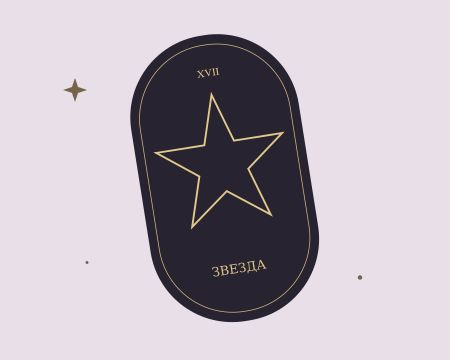
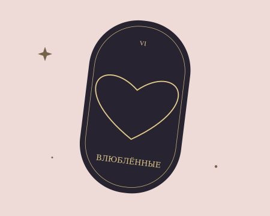
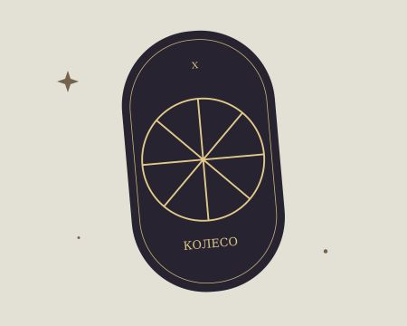

Один вопрос

Бережный взгляд на один конкретный вопрос. Подойдёт для первого знакомства с форматом.
Стоимость: 790 ₽
Индивидуальные расклады Таро онлайн
hello@lunarline.example (демонстрационный адрес)Лунная линия — учебный проект онлайн-студии Таро. В основе концепции — спокойный разговор о личных вопросах.
Символы карт помогают начать рефлексию. Сайт не обещает предсказания событий и не принимает оплату.

Бережный взгляд на один конкретный вопрос. Подойдёт для первого знакомства с форматом.
Стоимость: 790 ₽

Ваши ожидания, границы и общение. Посмотрите на отношения с новой стороны.
Стоимость: 1490 ₽

Два варианта, ваши сомнения и ресурсы. Пространство для осознанного выбора.
Стоимость: 1290 ₽
| Расклад | Длительность | Стоимость |
|---|---|---|
| Один вопрос | 15 минут | 790 ₽ |
| Об отношениях | 30 минут | 1490 ₽ |
| На перекрёстке | 25 минут | 1290 ₽ |
Онлайн, ежедневно 10:00–20:00 МСК.
Написать на демонстрационный email